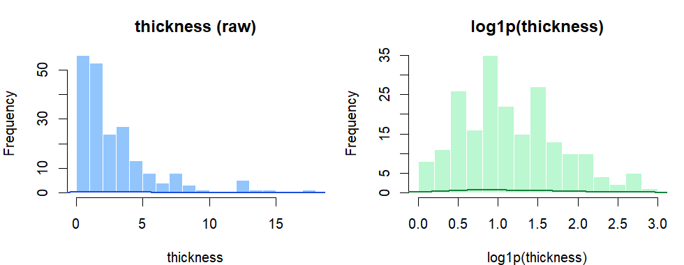
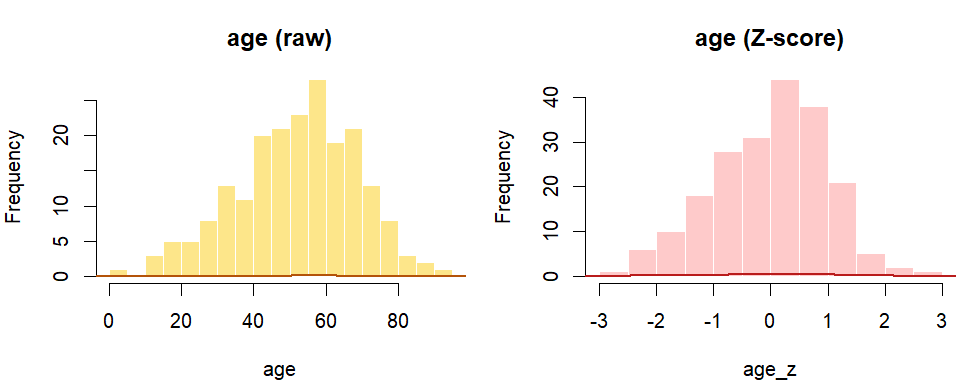
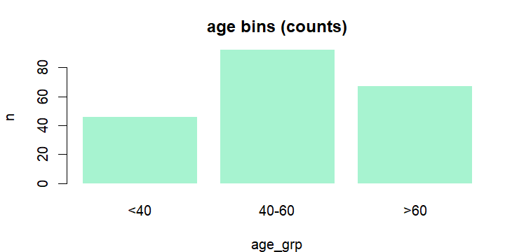

数据集成与变量转换
本练习直接使用
MASS 包自带的 Melanoma 数据集（data(Melanoma)），演示多表对齐合并（数据集成）与常见的变量转换/特征构造（如标准化、归一化、对数变换、分箱、PCA）。
提示：请先完成第 0 节的数据载入，再开始第 1 节。
0. 载入 Melanoma（新会话）
0.1 载入数据
提示：下文用对象名
mel 表示本练习使用的数据表（data.frame）。
Step 1 / 设置镜像（可选）
options(repos = c(CRAN = "https://mirrors.tuna.tsinghua.edu.cn/CRAN/"))Step 2 / 安装并加载 MASS（必须）
if (!requireNamespace("MASS", quietly = TRUE)) install.packages("MASS")
library(MASS)Step 3 / 载入 Melanoma 并赋给 mel
data(Melanoma)
mel = as.data.frame(Melanoma)
str(mel)
head(mel, 3)
结果：对象
mel 已载入，可用于后续集成与变换。
1. 集成与变量转换
内容概览：数据拆分与对齐合并；变量转换；特征构造与 PCA（探索性降维）。
1.1 集成：拆表与合并（对齐主键）
Step 1 / 生成主键 id（这里用行号模拟）
d = as.data.frame(mel)
d$id = seq_len(nrow(d))
head(d[, c("id", "time", "age", "sex")], 3)Step 2 / 拆成两张表：基础信息 vs 结局相关
tbl_base = d[, c("id", "time", "age", "sex")]
tbl_outcome = d[, c("id", "time", "thickness", "ulcer", "status")]Step 3 / 按主键合并（左连接效果）
merged = merge(tbl_base, tbl_outcome, by = "id", all.x = TRUE, suffixes = c(".x", ".y"))
# 只保留一份 time（示例：保留 time.x）
merged$time.y = NULL
names(merged)[names(merged) == "time.x"] = "time"
head(merged, 3)
结果：
merged 为对齐合并后的结果表。
1.2 变量转换：标准化 / 归一化 / log / 分箱
Step 4 / Z-score 标准化（均值 0、方差 1）
d = as.data.frame(mel)
d$age_z = as.numeric(scale(d$age))
d$thickness_z = as.numeric(scale(d$thickness))
head(d[, c("age", "age_z", "thickness", "thickness_z")], 3)Step 5 / Min-Max 归一化（映射到 0–1）
d$age_norm = (d$age - min(d$age, na.rm = TRUE)) /
(max(d$age, na.rm = TRUE) - min(d$age, na.rm = TRUE))
# thickness 可能含 NA 或极端值；分母加一个很小常数防止除 0
d$thickness_norm = (d$thickness - min(d$thickness, na.rm = TRUE)) /
(max(d$thickness, na.rm = TRUE) - min(d$thickness, na.rm = TRUE) + 1e-8)
head(d[, c("age", "age_norm", "thickness", "thickness_norm")], 3)Step 6 / 对数变换（适合右偏分布）
d$log_time = log1p(d$time)
d$log_thickness = log1p(d$thickness)
summary(d[, c("time", "log_time", "thickness", "log_thickness")])
thickness 原始分布与 log1p(thickness) 的分布对比（对数变换常用于缓解右偏）。
age 原始分布与 Z-score 标准化后的分布对比（均值约为 0、标准差约为 1）。Step 7 / 分箱：把连续变量变成类别
d$age_grp = cut(
d$age,
breaks = c(0, 40, 60, 100),
labels = c("<40", "40-60", ">60"),
include.lowest = TRUE
)
d$thickness_cat = cut(
d$thickness,
breaks = c(0, 1, 4, 10),
labels = c("薄", "中", "厚"),
include.lowest = TRUE
)
table(d$age_grp, useNA = "ifany")
table(d$thickness_cat, useNA = "ifany")
age 分箱后的频数（示例分箱：<40、40–60、>60）。Step 8 / 保存变换结果（后续提交用）
transformed = d
head(transformed[, c("age", "age_z", "age_norm", "age_grp", "log_thickness", "thickness_cat")], 3)1.3 特征构造与 PCA（探索性降维）
Step 9 / 特征构造：交互项 + 指示变量
d = as.data.frame(mel)
d$age_thick = d$age * d$thickness
d$is_older = (d$age > 60) + 0
head(d[, c("age", "thickness", "age_thick", "is_older")], 3)Step 10 / PCA：选数值列 → 标准化 → prcomp
num_cols = c("time", "age", "thickness", "ulcer", "year")
X = scale(d[, num_cols], center = TRUE, scale = TRUE)
X = X[complete.cases(X), ] # PCA 需要完整数值行
pc = prcomp(X)Step 11 / 看主成分解释度，并取前两维
summary(pc)
feat_pc = pc$x[, 1:2]
colnames(feat_pc) = c("PC1", "PC2")
head(feat_pc, 3)
结果：
feat_pc 为样本在 PC1/PC2 上的坐标。
2. 实验内容
提交要求：按下列条目给出相应输出与简要说明。
A. 集成与转换
- 集成结果：提交
head(merged, 3)输出（或截图）。 - 变换解释：从
transformed中任选 1 列变换（如age_z或age_grp），写一句话解释它在后续分析/建模中可能的作用。
B. PCA（探索性降维）
- PCA 输出：提交
summary(pc)或head(feat_pc, 3)任一项输出。 - 说明：用一句话说明 PCA 在本练习中用于做什么。